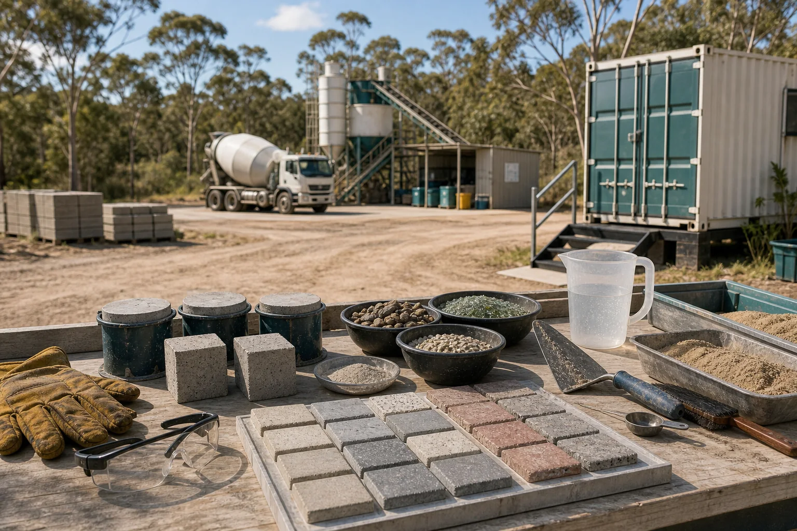

Sample pavers and tiles
Compare cement, geopolymer, glass fines, recycled aggregate, colour, texture, grip, curing time and weathering.
The batch-plant sister-site idea belongs in the inland service landscape, with the dump, roads, trucks and other practical infrastructure. That is exactly why it matters: it is a place to learn how heavy materials become useful, low-waste, safer and more local.

Concrete touches paths, slabs, drains, kerbs, garden edges, signage bases, storm preparation, repairs and small civic works. A sister lab can turn that everyday material into a shared learning surface: sand, aggregate, binder, water, curing, strength, finish, waste and care.
The goal is not to run the plant from a website. The goal is to invite residents, trades, students, owners, Council, makers and grant partners into a practical conversation about better mixes, cleaner inputs and useful non-structural prototypes.
This page is a sister-site concept, not an operating agreement. Any batch-plant collaboration would need owner consent, worker safety, environmental controls, traffic planning and qualified advice.
Geopolymers are one of the most exciting concrete-adjacent pathways because they ask whether aluminosilicate-rich materials, recycled fines and carefully controlled activators can make durable lower-cement products. The maker-space can begin with tiny, labelled, non-structural samples while qualified people keep structural work, chemicals, standards and public-risk decisions in the right hands.
Map inputs. Local sand, recycled glass, clean rubble, crushed brick, biomass ash, oyster shell, imported binders and any activators are named clearly before mixing.
Mix tiny. Make pucks, tiles, cubes, weights and garden parts at bench scale, with every recipe labelled and every no-go material recorded.
Cure and compare. Track time, water, weight, surface finish, cracking, absorption, texture and handling, then publish plain notes.
Review before scale. Engineers, trades, owners and environmental reviewers decide what remains a demo, what deserves more testing, and what is ready for a proper pilot.
The first products should be ordinary enough to use and strong enough to teach. Every one can carry a recipe, a photo, a safety note, a cure date and a next question.
Compare cement, geopolymer, glass fines, recycled aggregate, colour, texture, grip, curing time and weathering.
Make labelled, reusable bases for shade, signs, noticeboards, disaster kiosks, market stalls and temporary public infrastructure.
Build non-structural edging, worm-farm bases, water-diversion blocks, wash-station parts and Shared Table supports.
Teach crack filling, patch tests, moisture problems, adhesion, surface prep and the moment a licensed trade needs to step in.
Clean rubble, rejected batches and returned concrete can become a measured circular-design stream instead of an awkward disposal problem.
Display cement, sand, aggregate, glass, geopolymer samples, failed mixes and finished pieces so people can learn by looking and touching.
Cement burns, silica dust, alkaline activators, heavy lifting, machinery, trucks, washout water, runoff, standards and property access all need real controls. Those controls make the work stronger, not smaller.
A good concrete lab does not need fear or mystery. It needs PPE, dust control, safe storage, clear recipes, labelled samples, measured waste, tidy washout plans and people who are proud to stop, check and improve the work.
That kind of discipline makes the site inclusive. A resident can learn the basics, a school group can compare samples, a trade can name reality, an owner can protect operations, and a funder can see the evidence trail.
The batch-plant sister-site idea connects sand literacy, the tip loop, repair, local construction, gardens, disaster readiness and grant evidence. It gives the maker-space a heavier material pathway without pretending the first room is a full industrial plant.
Lawful pre-tip diversion can feed clean rubble, formwork, pallets, tubs and reusable materials into test pieces.
Mixers, moulds, trowels, PPE, scales, curing boxes and washout gear can be stewarded like serious shared tools.
Sand, glass, aggregate, geopolymer and ceramic samples can tell one connected material story.
Weights, mounts, signage bases and repair notes can support public screens and emergency setup.
Garden beds, wash stations, shade anchors and food-resilience infrastructure can become first-use cases.
Every labelled test creates evidence around waste reduction, training, safety, local supply and low-carbon materials.
Create a small Concrete and Geopolymer Learning Yard linked to the maker-space. Keep it owner-approved, non-structural at first, recipe-led, public-readable and evidence-rich. Let practical samples show what is worth scaling.
Invite. Ask the plant, trades, residents, schools, Council and partner groups what useful material problem is worth testing first.
Mix. Make labelled non-structural samples from clean, lawful inputs and compare them honestly.
Publish. Share the recipe, result, safety lesson, photo and next step so the island learns together.